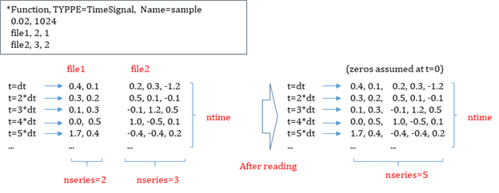
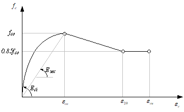
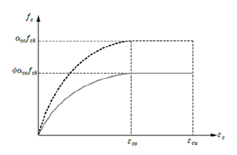
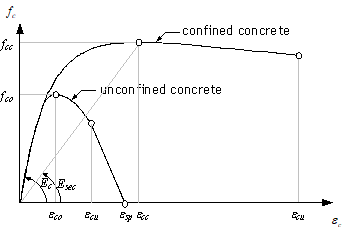
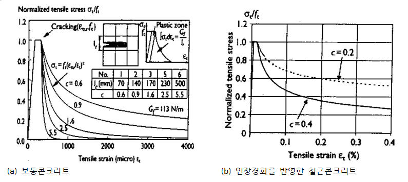

8. Function
Functions are specified using *Function. Each function must have a unique name, and duplicate names are not allowed. *Function is used for time functions or for functions such as failure envelopes in material models.
*Function
Define function
*FUNCTION, TYPE=type, Name=name
dataline...
Keyword line
- TYPE=type: type of function
- MultiLinear: Multi-linear function
- TimeSignal: Time signal. Multi-linear function with fixed step size
- String: function by mathematical expression
- HognestadCEnv: Hognestad concrete compressive envelope
- FIBCEnv: FIB concrete compressive envelope
- MPPCEnv: Mander-Pristley-Park concrete compressive envelope
- MPPCIE: Mander-Pristley-Park concrete compressive inelastic strain
- MaekawaTEnv: Maekawa concrete tensile envelope
- Name=name: function name
Function-related commands define functions in the form of \(\small y=f(x)\) or \(\small y1=f1(x), y2=f2(x), ...\). Functions are used to define envelopes when specifying material models or as time histories when defining loads.
*Function, Type=MultiLinear
Multilinear function
*Function, Type=MultiLinear, Name=name
x, y1, y2, ..., yn
...
First dataline and subsequent datalines
- x, y1, y2, ..., yn: (x,y1,y2,..., yn) 형태로 입력.
The MultiLinear function defines the functions y1(x), y2(x), ... in the form of (x, y1(x), y2(x), ..., yn(x)).
Example
*Function, Type=MultiLinear, Name=func1
0., 45.3
2.802903E-3, 86.4
7.26864E-5, 122.5
*Function, Type=MultiLinear, Name=func2
0., 45.3, 12.3
2.802903E-3, 86.4, 5.1
7.26864E-5, 122.5, 3.1
*Function, Type=TimeSignal
Time signal. Multi-linear function with fixed step size
*Function, Type=TimeSignal, Name=name
dtime, ntime
file, nseries, scaleFactor, skipRows
...
First dataline
- dtime: time step (required).
- ntime: number of time data (optional). If the number of rows in the read data exceeds ntime, the extra rows are ignored. If it is less than ntime, the remaining values are padded with zeros. If ntime is not specified, it is automatically set to the length of the longest time series. Other time series shorter than ntime are padded with zeros up to ntime.
Second dataline and subsequent datalines
- file: File to be read (required). A text file with values separated by commas, spaces, etc., or an npy file.
- nseries: Number of time series in the file (optional, default 1). For npy files, the number of columns must be the same.
- scale: Scale factor (optional, default 1).
- skipRows: Number of rows to skip at the beginning of the file (optional, default 0). Ignored for npy files.
The TimeSignal function, suitable for representing time histories, can be understood as a multi-linear function with fixed interval x values. The data from the file is read with values separated by whitespace (colon, space, tab, newline). Each file consists of nseries time series data. It reads ntime entries for each of the nseries data. If the file has fewer data entries, the missing values are filled with zeros. At time 0, the value is assumed to be 0, and the first value given in the data corresponds to the value at time dt. The final value corresponds to the value at time ntime*dt.

Fig. 8.2-1. TimeSignal function
In the time data file, any content after # is ignored (comment).
Example
*Function, TYPE=TimeSignal, Name=EqAcc
0.02, 1024 # dt, ntime
elcenX.dat, 1, 3.01 # file, nseries, scaleFactor
elcenYZ.dat, 2, 3.01, 4 # dataFile, nseries, scaleFactor, skipRows
*Function, Type=String
Define function by mathematical expression
*Function, Type=STRING, Name=name
expreesion, min,max
First dataline
- expression: Expression with x independent variable, such as "sin(x)+1". Note tha white space is not allowed.
- min,max: minimun and maximun range. Zero function value is assumed beyond the givne range. If Range keyword is not given, no range check is performed
'*Function, TYPE=String' has the feature of parsing the expression. The internal parser suppports typical mathematical functions, such as sin(x), cos(x), tan(x), acos(x), atan(x), cosh(x), sinh(x), tanh(x), fabs(x), exp(x), log(x), log10(x), sqrt(x), step(x), sgn(x), and pow(x,n).
Example
*Function, Type=String Name=Half-sine
sin(2*pi/1.2*x), 0., 0.6
*Function, Type=HognestadCEnv
Define the compressive envelope of concrete based on Hognestad's curve.
*Function, Type=HognestadCEnv, Name=name
fco, Ec, ec20, ecu
First dataline
- fco: compressive strength (requied)
- Ec: initial tangent modulus (required)
- ec20: straint at 0.85fcm concrete stress of of descending branch(optional, default 0.003)
- ecu: ultimate strain (optional, always set to max(ec20, ecu) )
Hognestad’s cmpressive envelope of concrete given as
where, \(\small\epsilon_{20}\) coressponding to \(\small f_{co}\) is given as

Fig. 8.2-1. Compressive failure envelope of Hognestad model
Example
*Function, Type=HognestadCEnv, Name=HognestadTest1
25., 23500.
*Function, Type=HognestadCEnv, Name=HognestadTest2
25., 23500., 0.0031, 0.0032
*Function, Type=HognestadCEnv, Name=HognestadTest3
25., 23500., 0.0032
*Function, Type=ParabolaCEnv
Define the stress-strain compressive envelope for cross-sectional design as specified by EC2 and KDS.
*Function, Type=ParabolaCEnv, Name=name
fco, n, eco, ecu
First dataline
- fco: design compressive strength, (requied)
- n: shape factor (required)
- eco: peak strain (optional, 0.002)
- ecu: ultimate strain (optional, always set to max(eco, ecu) )
The curve given as
where, \(\small f_{co} = \phi_c (0.85f_{ck})\), \(\small\phi_c = 0.65\) for ultimate limit state. \(\small\phi_c = 1\) for extreme limit state.

Fig. 8.2-3. ParabolaCEnv function
The elastic modulus, which is the tangent slope, is calculated as follows.
Example
*Function, Type=ParabolaCEnv, Name=ParabolaTest1
0.85*27, 1.8, 0.00203, 0.0033 # fco, n, eco, ecu
*Function, Type=FIBCEnv
Define the compressive envelope of concrete according to CEB/FIB MC90.
*Function, Type=FIBCEnv, Name=name
fcm, Ec, eco
First dataline
- fcm: compressive strength (requied)
- Ec: initial tangent modulus (required)
- eco: strain at peak concrete strength (optional, default automatically computed)

Fig. 8.2-4. Compressive Failure Envelope of EB-FIP MC90
Example
*Function, Type=FIBCEnv, Name=FIBCEnvTest1
25., 23500. # fcm, Ec, eco
*Function, Type=FIBCEnv, Name=FIBCEnvTest2
25., 23500., 0.002 # fcm, Ec, eco
*Function, Type=MPPCEnv
Define the compressive envelope of concrete based on the Mander, Priestly, and Park model.
*Function, Type=MPPCEnv Name=name
fco, Ec, eco, ecu, fcc, esp
First dataline
- fco: unconfined compressive strength (requied)
- Ec: initial tangent modulus (required)
- eco: strain at peak strength of unconfied concrete (optional, default 0.002)
- ecu: ultimate strain (optional, default 2*eco)
- fcc: confined compressive strength. (optional, default fco)
- esp: spalling strain (optional, default ecu). The straight line from to is assumed, if and only if is greater than ,
The Mander-Priestly-Park model can define both the confined and unconfined concrete model.

Fig. 8.2-5. Compressive Failure Envelope of Mander, Priestley, Park’s Concrete Model
Example
*Function, Type=MPPCEnv, Name=MPPCEnvTest1
25., 23500. # fco, Ec, eco, ecu, fcc, esp
*Function, Type=MPPCEnv, Name=MPPCEnvTest2
25., 23500., 0.002, 0.004, 40., 0.006 # fco, Ec, eco, ecu, fcc, esp
*Function, Type=MPPCIE
Define the inelastic strain of concrete based on the Mander, Priestly, and Park model.
*Function, Type=MPPCIE Name=cover
compressiveEnv, epeak
First dataline
- compressiveEnv: Compressive envelope function
- epeak: strain at peak concrete stength(optional, default 0.002). If the given compressiveEnv is a type of MPPCEnv, Hognestad, and CEBFIB, epeak is neglected(automatically computed),.
Although this function deefines the inelastic strain by the Mander-Priestly-Park model, it can be used with the abitary compressive envelope function
Example
*Function, Type=MPPCEnv, Name=concC
25., 23500.
*Function, Type=MPPCIE, Name=concCI
concC
*Function, Type=MaekawaTEnv
Maekawa’ concrete tensile envelope
*Function, Type=MaekawaTEnv Name=coverTension
compressiveEnv,ft, c
First dataline
- compressiveEnv: Compressive envelope function(required)
- ft: tensile strength(required)
- c: parameter for Maekawa model (optional, default 0.4)
Maekawa et al. (2002) proposed the following tension softening curve for both normal concrete and reinforced concrete considering tensile hardening, using the same equation:
Here, \(c\) is the factor that determines the shape of the curve. For normal concrete, it should be determined by the following equation based on fracture energy and the characteristic length of the element:
In reinforced concrete, parameter analysis suggests a value of 0.4 for deformed bars and 0.2 for welded wire mesh. Figure 8.2-5 shows a representative result.

Fig. 8.2-6. Tensile Failure Envelope of Maekawa model
Example
*Function, Type=MPPCEnv, Name=concC
25, 23500.
*Function, Type=MaekawaTEnv, Name=concT
concC, 3